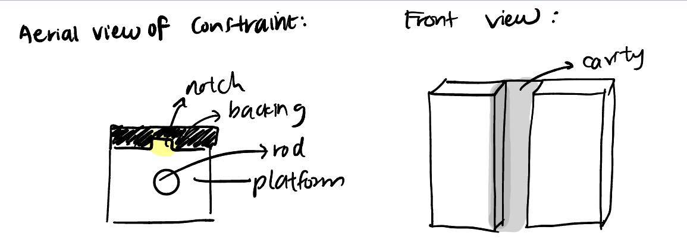
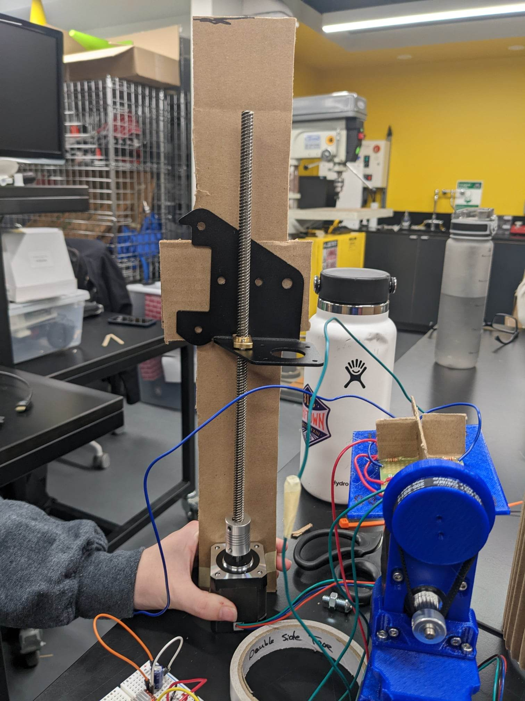
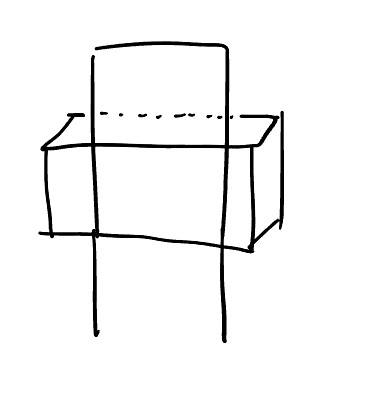
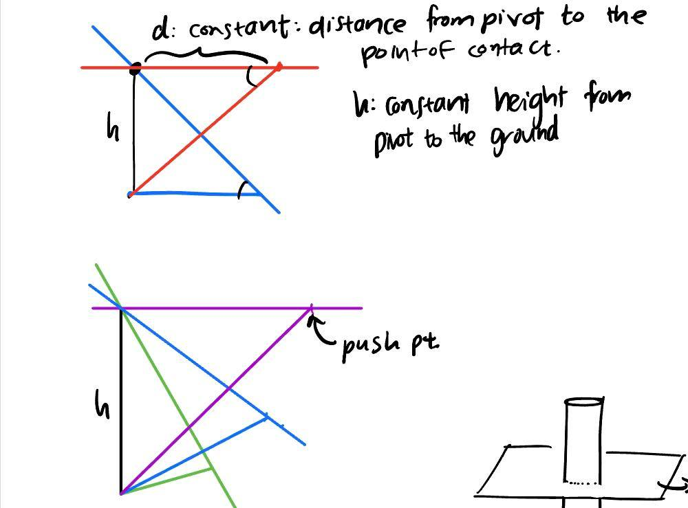
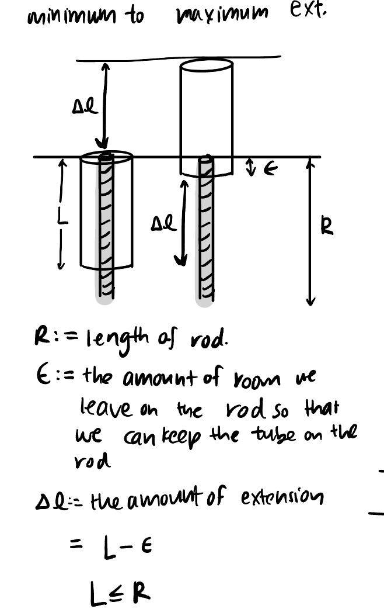
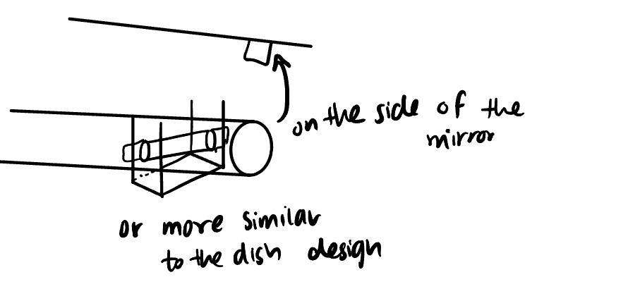

### Week 8: Planning the Placement of the Motor for Azimuthal Motion
### Monday - 11/7: Beginning to think about the Azimuthal Motion
On Monday, we started breaking into project subteams for the final stretch of the project. Anna and I
are working on moving the dish in the azimuthal direction. We are interested in using a threaded rod
coupled with a stepper motor to lift up the dish in the azimuthal direction. for reference, we looked
at the design of the big dish solar cooker we assembled and we are planning on using a similar, threaded rod mechanism
with two pivots but rather than having the crank at the top manually adjusting the angle of the dish, we will
have our stepper motors do this for us. We supposed it may be easier to push the dish up from the bottom, rather than pulling the
top of the dish down (here top and bottom refer to the part lower than or above the level of the pivot).
We realized after considering for a while that there would be a need for two pivots if we want to keep the point of
contact between the rod and the dish at the same location. We spent a lot of time overall just conceptualizing
and drawing a few sketches for what we imagine the pivoting motion to look like.
### Wednesday - 11/9: Constraints and Threaded Rods
Today we discussed how constraining a nut on a threaded rod would allow for it to travel vertically upwards without rotating.
We also were interested in testing out the capacity of the stepper motor to support a heavy load. To start,
we wired up the stepper motor and set up the rotation so that it would spin some cycles in one direction, and then go the other way,
moving the nut up some distance and then down, simulating the range of behavior we would eventually want from our threaded rod.
We also realized a few interesting things to make the motion more smooth was taking smaller steps (i.e. 1/2 a revolution instead of 1 rev). There
were pins on the stepper motor controller that allowed for us to set the microstep size depending on which pin we set on high. In addition,
we also found that we were able to make the motion more smooth by adding on more weight. After I wired up the stepper motor and Anna built a
constraint for the nut so that it would not spin but rather purely translate up and down, we were ready to test. For this constraining, initially discussed a design that
looks like this:

But after considering the material and cardboard we had on hand to do a quick prototype, Anna settled on using a different form of constraint that looks more like this:


During our tests of the capacity of these motors, we didn't have a standardized method for testing so we just used increasingly heavy weights. The final test we ran
involved two full waterbottles of weight and the motor was stil able move up and down quite well. We did notice that there perhaps was a slow down in the speed of the movement.
We were able to do these tests very quantitatively or scientifically however, which we hope to do in the future.
In summary, some of the considerations for our design are as follows:
1.The angles of the rod vs. the dish and pivots
We realize that if we want to keep the push pivot point the same, both angles and the length of the rod will change.
We will hopefully explore further on the range of angles and lengths of rod we may potentially need, filled in with some numbers.

2.The maximum extenison of a threaded rod with another rod
This calculation will affect how long the rods need to be.

3.How we want to constrain the outer tube that will move up and down with respect to the threaded rod
I realized that in our model for the idea constraint, this only works when the rod is moving a long a straight line of motion. In our case, we won't be moving a nut up the tube which is fixed
in one vertical direction, but rather we will be rotating the angle of the rod in the meantime too so using the backing as a constraint
is not very feasible. However, if we were to constrain the tube by using the end in contact with the dish at the hinge, this could work.
This design also makes sense because the push point is supposed to be fixed in one place along the dish anyways.

4.The number of motors we would potentially want to support the load
This is still an unanswered question which I imagine will depend on the load we need to support, ie. the weight of the final dish, as well as the
capacity of each step motor. We can test how much mass the step motor can move if we set up further testing like what we started on Wednesday.
5.The way to rotate a motor with the hinge.
This is also something that is an important question to consider. Because the angles on both side of the tube are changing,
the motor fastened on one end of the rod will need to be able to rotate too along with the tube. The issue then is how to make the motor secure
enough to push the weight but also enough room for movement to rotate.